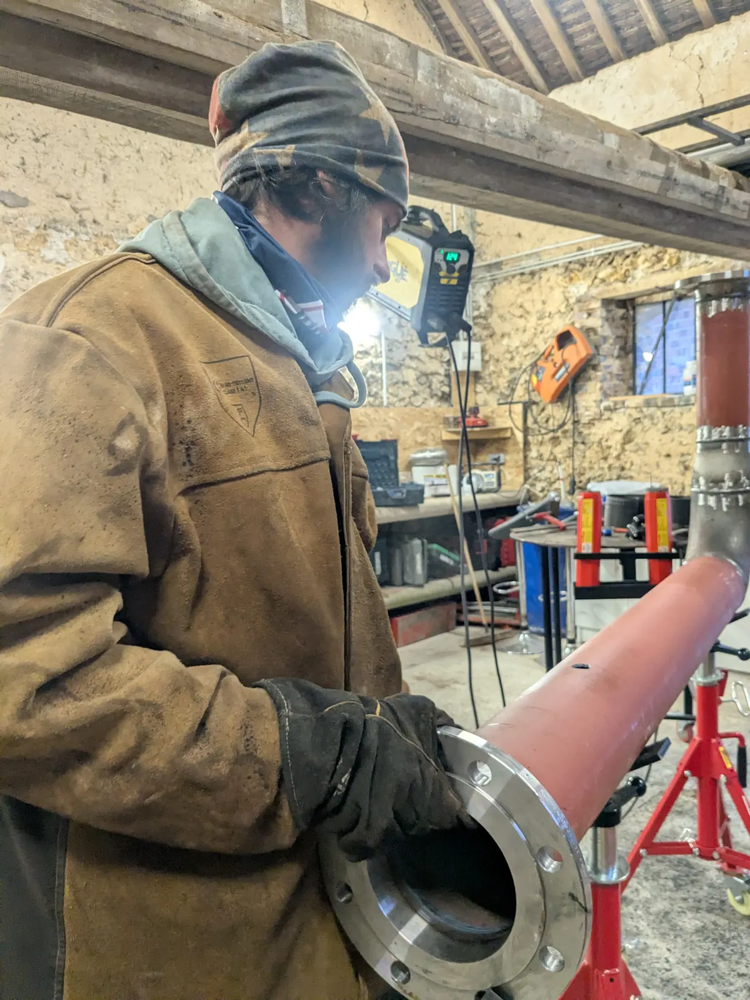
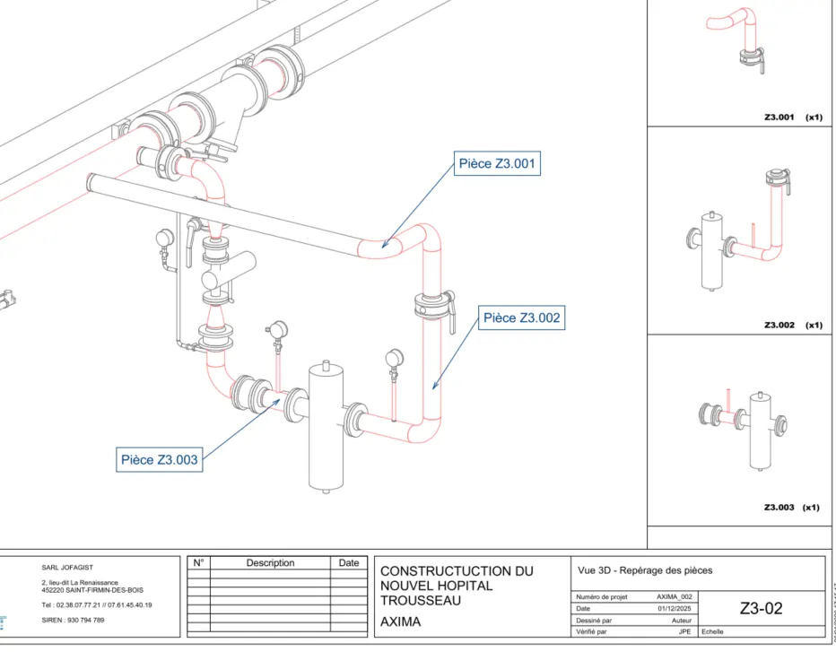

Quand on parle de préfabrication de tuyauterie, on pense d'abord aux spools : les tronçons de réseau assemblés en atelier. Mais un poste entier reste trop souvent traité à part, voire complètement oublié dans la réflexion : le supportage. Colliers, potences, berceaux, cadres de fixation : ces éléments peuvent pourtant, eux aussi, être préfabriqués.

Le supportage, un poste sous-estimé
Sur la plupart des projets, les études se concentrent sur le dimensionnement des réseaux : diamètres, matériaux, tracés. Le supportage arrive ensuite, souvent traité au fil de l'eau sur le chantier, à la débrouille, avec des découpes et des soudures réalisées sur place, dans des conditions moins bonnes qu'en atelier.
Pourtant, sur une installation de CVC (chauffage, ventilation, climatisation) dans un bâtiment tertiaire ou de santé, le supportage peut représenter une part significative du temps de pose sur site : autant d'heures qui pourraient être gagnées en le préfabriquant au même titre que la tuyauterie.
Pourquoi préfabriquer aussi le supportage ?
1. Un planning plus fiable
Quand les supports arrivent prêts à poser, en même temps que les spools qu'ils doivent recevoir, le montage sur site s'enchaîne sans attente. Moins d'aléas, moins d'improvisation, un planning de pose plus facile à tenir.
2. Une qualité homogène
Fabriqués en atelier, dans les mêmes conditions que le reste du réseau, les éléments de supportage bénéficient d'un environnement de travail maîtrisé : découpe précise, assemblage soigné, contrôle continu.
3. Moins d'interventions sur site
Moins de découpe, de meulage et de soudage réalisés en hauteur ou en espace technique restreint : un vrai gain en termes de sécurité et de propreté de chantier.

Un enjeu particulier sur les projets CVC
Hôpitaux, lycées, écoles, EHPAD, usines : ces bâtiments regroupent souvent des kilomètres de réseaux CVC (chauffage, eau chaude sanitaire, sous-stations, panoplies de CTA) installés dans des locaux techniques exigus et des délais de chantier serrés.
Sur ce type de projet, maximiser la part des éléments préfabriqués en atelier, réseaux et supportage, est l'un des leviers les plus efficaces pour tenir les délais sans sacrifier la qualité de pose.
Notre approche chez JOFAGIST
Nous travaillons directement à partir de vos plans, fiches techniques ou maquettes 3D (Revit) pour étudier le tracé des réseaux et le positionnement des supports, et nous préfabriquons l'ensemble en atelier : tronçons de tuyauterie et éléments de supportage livrés prêts à poser, avec une notice de montage 3D pour faciliter l'installation sur site.
Au-delà de la préfabrication, nous assurons aussi l'installation de tuyauterie et de plomberie industrielle directement sur site : chaufferies, sous-stations, salles techniques.
Un projet de tuyauterie ou de supportage CVC ?
Devis gratuit sous 48h. Nous étudions vos plans et vous proposons une solution adaptée.